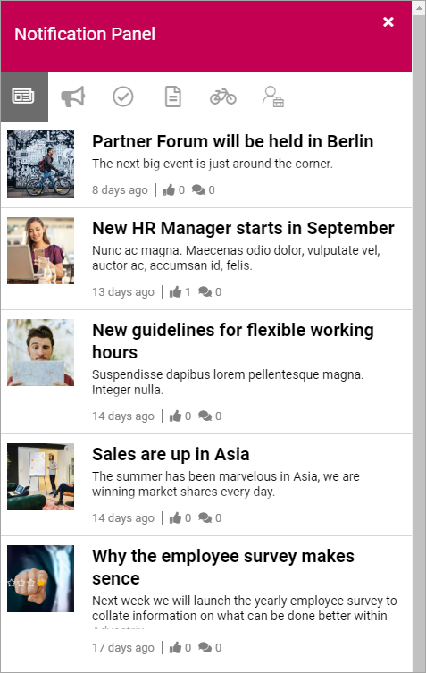
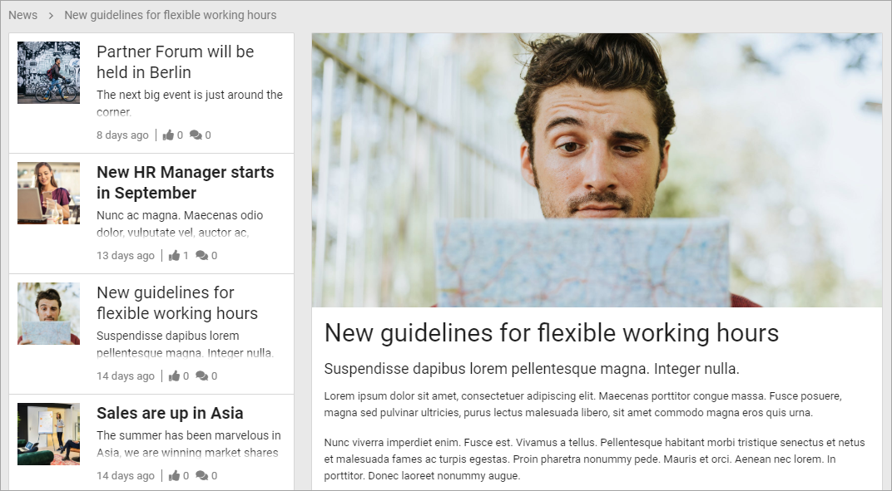
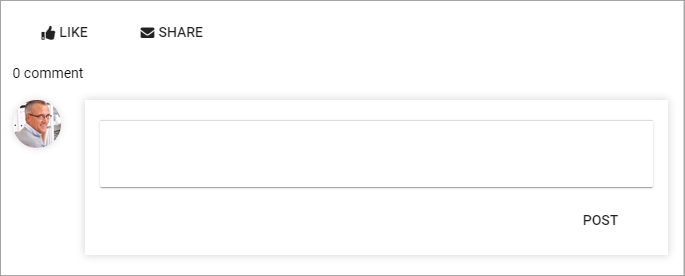
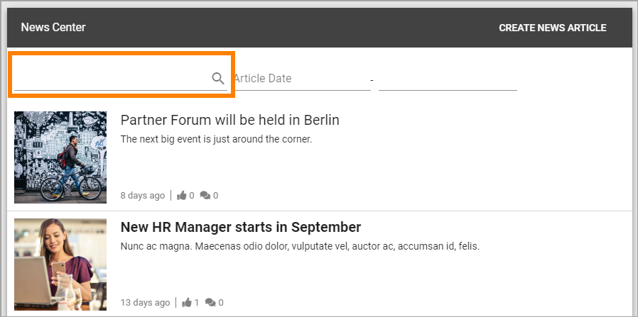
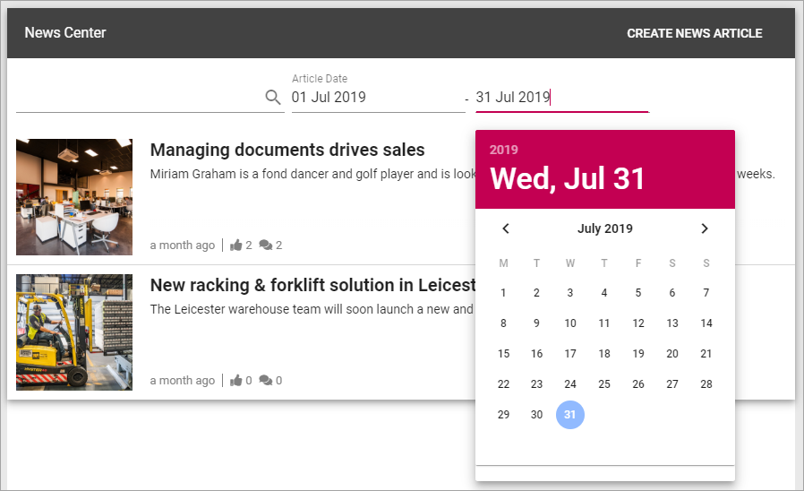
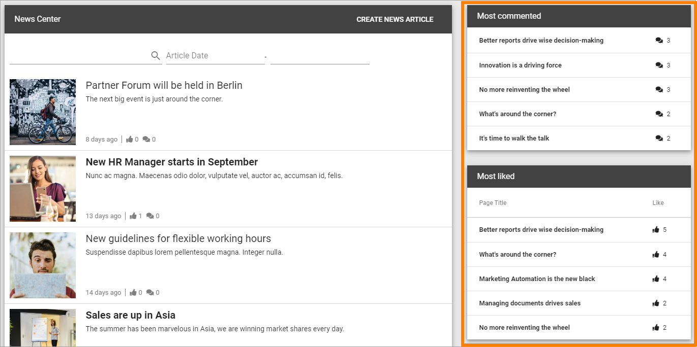

Read News¶
News is very often an important part of a Omnia Intranet implementation. Normally you can read both the latest news and older news. You can also find News articles through search using Quick Search and Advanced Search.
A common solution is that the latest news is available in a list at the start page. Here’s an example using the Page Rollup block:

The Page Rollup block can be used on any publishing page in Omnia. Another common solution is to make news available in the Notification Panel. Here’s an example:
To read a News article, click the heading or the image.
The News article can now be read. You can often read other new news articles here, without having to go back a step, for example:
When reading a News article, you can often like, share and comment the article:
Liking, sharing and commenting works the same way here as for publishing pages in Omnia, see: Like, share and comment
The News Archive¶
The most common solution is that all published articles are available in a News Archive, in a News Center. You can always search for News articles. It’s also possible to go to the News Archive and browse the list.

A News Archive can look like this:

The option “Create News Article” is shown for the users with the right permissions only, see: Create news
The main list displays all published News articles, the latest at the top. You can always browse the list to look for a specific News article.
It’s also possible to use search. Use the search field to search for words in the heading or content:
The list can also be filtered on dates. Use the two fields to set a from and to date, or just a to date:
Another common solution is to display two lists to the right of the News list - one for the most commented News articles, and one for the most read:
You can click headings in these lists to read a News article.